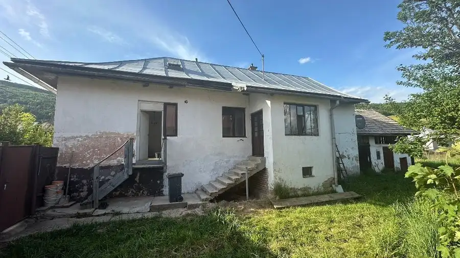
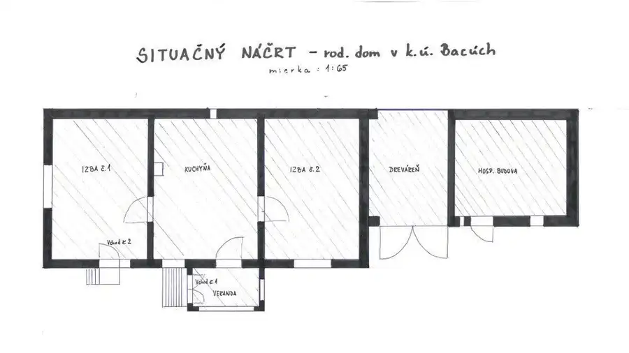
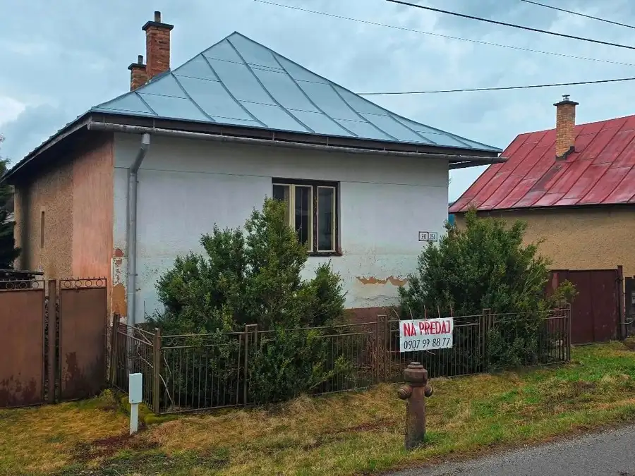
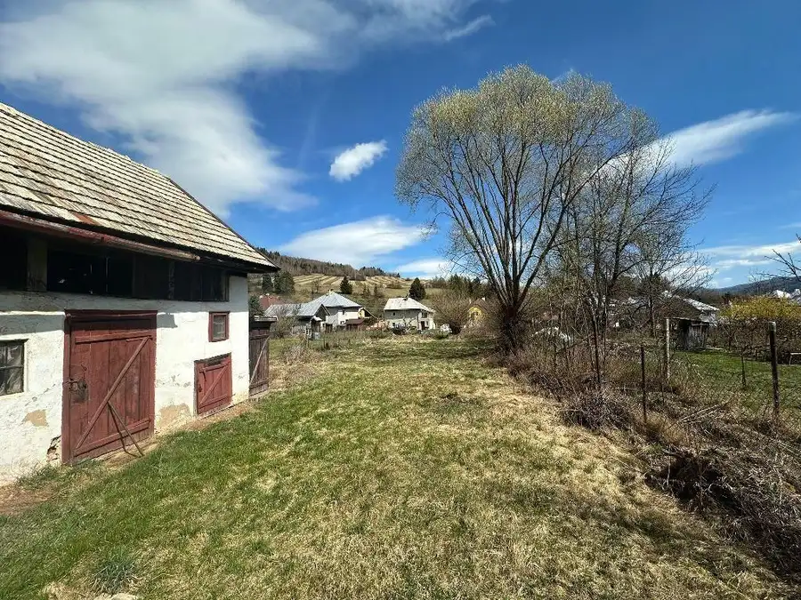
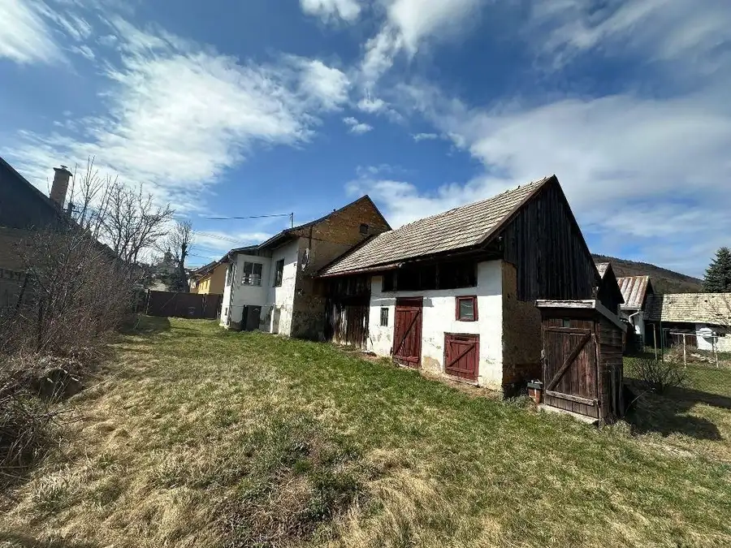
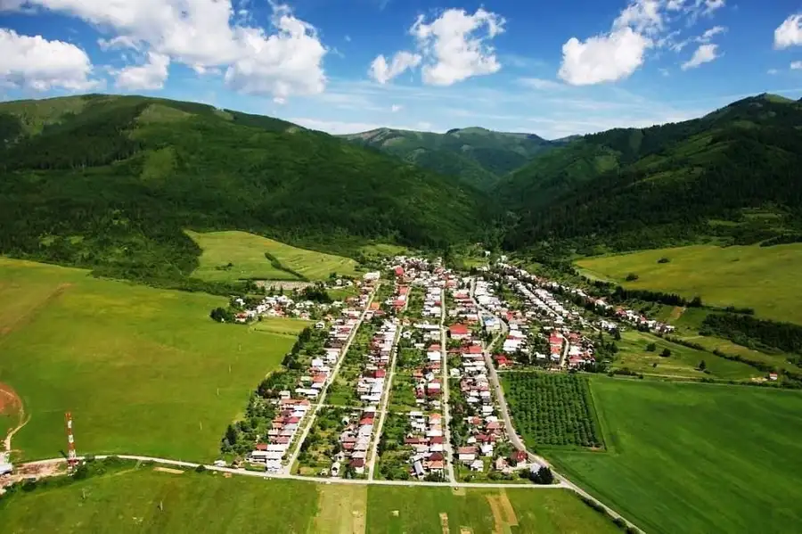

Predaj rodinného domu s bohatou históriou v srdci Horehronia – obec Bacúch, www.bbreality.sk, Ing. Jan Vundr
Bacúch







- Plocha105 m²
- StavPôvodný stav
- VlastníctvoOsobné
O nehnuteľnosti
Hľadáte miesto pre svoj vysnívaný domov alebo chalupu v prostredí s autentickou atmosférou? Realitná kancelária BB-REALITY, s.r.o. vám exkluzívne ponúka na predaj rodinný dom v obci Bacúch, ktorá je známa ako najstaršia obec na Horehroní (prvá písomná zmienka už z roku 1274).ZÁKLADNÉ PARAMETRE:Obytná plocha: 105 m2Zastavaná plocha: 155 m2Pozemok: slnečných 647 m2STAV: Dom vyžaduje rekonštrukciu (zohľadnené v kúpnej cene), čo novému majiteľovi otvára dvere k realizácii vlastných predstáv.INŽINIERSKE SIETE:Aktuálne pripojené: elektrická energia, obecný vodovod.Dostupné pred domom: optický internet, plyn, obecná kanalizácia.LOKALITA A HISTÓRIA:Obec Bacúch nie je len obyčajnou adresou. Je to miesto s hlbokými koreňmi, siahajúcimi až do čias kráľa Bela IV. a rodu Bogomírovcov. Oblasť kedysi známa ryžovaním zlata a ťažbou rúd dnes ponúka pokoj, čistú prírodu Nízkych Tatier a bohaté možnosti na turistiku či oddych.OKOLIE, KTORÉ SI ZAMILUJETE:Horehronie je rajom pre turistov, hubárov a milovníkov zimných športov. Z Bacúcha máte na dosah hrebeňovky Nízkych Tatier, lyžiarske strediská aj unikátnu prírodu, ktorá bola po stáročia formovaná baníckou históriou a kráľovskými darmi.PREČO SI VYBRAŤ TÚTO PONUKU?Potenciál: Ideálna investícia na trvalé bývanie alebo rekreačné účely.Dostupnosť sietí: Všetky kľúčové prípojky vrátane optiky priamo pri pozemku.Cena: Nastavená férovo vzhľadom na potrebnú investíciu do rekonštrukcie.Viac informácií Vám radi poskytneme telefonicky, na osobnej obhliadke alebo priamo v našej kancelárii: BB-REALITY, s.r.o. Skuteckého 17, Banská Bystrica (zabezpečené parkovanie pre klientov)Kontakt:Ing. Jan Vundr 0907 99 88 77 | 048 419 18 17 vundr@bbreality.skSme hrdým členom Realitnej únie SR a striktne dodržiavame jej Realitný kódex, čím garantujeme bezpečnosť a profesionalitu obchodu.
Parametre
- Druh
- Rodinný dom
- Druh domu
- Klasický dom
- Dátum zverejnenia
- 27. 05. 2026
- Energetický certifikát budovy
- nie je
- Orientácia
- Východná, Južná, Západná
- Plocha pozemku
- 645 m²
- Počet nadzemných podlaží
- 1
- Počet podzemných podlaží
- 1
- Počet spální
- 1
- Prístupová komunikácia
- Asfaltová
- Rok výstavby
- 1960
- Stav nehnuteľnosti
- Pôvodný stav
- Telekomunikácie
- Optická sieť, Telefón, Internet
- Terén pozemku
- Prevažne rovinatý
- Typ
- Predaj
- Typ konštrukcie
- Tehlová, Kamenná
- Vlastníctvo
- Osobné
- Vybavenie
- Špajza
- Vykurovanie
- Lokálne
- Zastavaná plocha
- 155 m²
- Úžitková plocha
- 105 m²
Kde to je


Mohlo by Vás zaujímať
 Komerčné priestoryNové
28 000 €Predaj: garáž, Banská Bystrica, 29. augusta - CentrumBB.sk
Banská Bystrica
22 m²
Komerčné priestoryNové
28 000 €Predaj: garáž, Banská Bystrica, 29. augusta - CentrumBB.sk
Banská Bystrica
22 m²
 DomNové
369 000 €Exkluzívne na predaj novostavba rodinného domu, Krahule, www.bbreality.sk
Krahule
694 m²
DomNové
369 000 €Exkluzívne na predaj novostavba rodinného domu, Krahule, www.bbreality.sk
Krahule
694 m²
 BytNové
320 000 €Predaj 4-izbový byt, Ružomberok, A. Bernoláka, 130 m2, www.BBreality.sk
Ružomberok
4-izbový130 m²2. podlažie
BytNové
320 000 €Predaj 4-izbový byt, Ružomberok, A. Bernoláka, 130 m2, www.BBreality.sk
Ružomberok
4-izbový130 m²2. podlažie